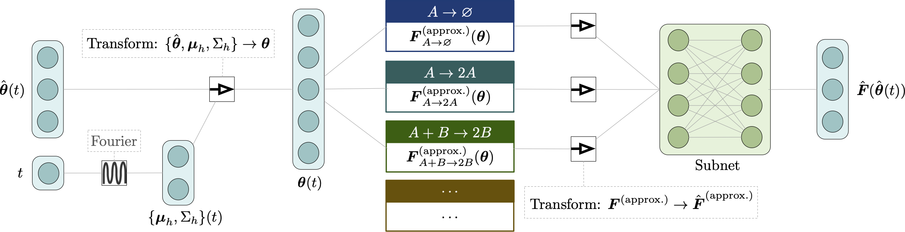

Physics-based dynamic PCA models in TensorFlow¶
{kind=link}
This is the source repo. for the physDBD Python package. It allows the creation of physics-based machine learning models in TensorFlow for modeling stochastic reaction networks.
Quickstart¶
Install:
pip install physDBD
See the example notebook in the example folder of the GitHub repo.
Scan the API reference.
About¶
This repo. implements a TensorFlow package for modeling stochastic reaction networks with a dynamic PCA model. Please see this paper for technical details:
XXX
The original implementation in the paper is written in Mathematica and can be found here. The Python package developed here translates these methods to TensorFlow.
The only current supported probability distribution is the Gaussian distribution defined by PCA; more general Gaussian distributions are a work in progress.
Requirements¶
TensorFlow 2.5.0 or later. Note: later versions not tested.
Python 3.7.4 or later.
Installation¶
Either: use pip:
pip install physDBD
Or alternatively, clone this repo. from GitHub and use the provided setup.py:
python setup.py install
API Documentation¶
See the API reference.
Example¶
See the notebook in the example directory in GitHub repo.
Citing¶
Please cite the following paper:
`
XXX
`
Indices and tables¶
Contents¶
Contents: